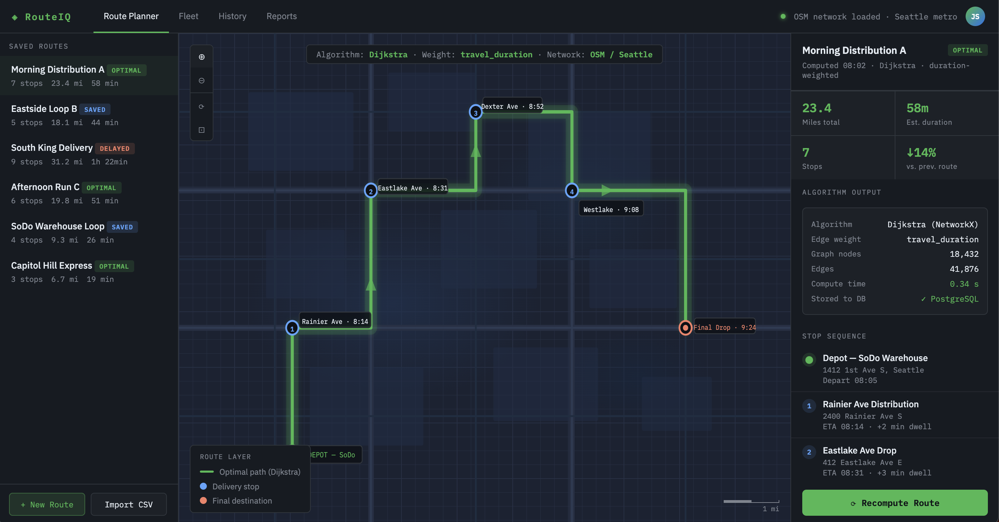

A full-stack web application built at Shoreline Capital that computes, visualizes,
and stores optimal truck delivery routes using Dijkstra's algorithm over live
OpenStreetMap road networks.
TypeFull-Stack App
ContextInternship — Shoreline Capital
Year2025
StatusDeployed

OSMRoad Network Source
DijkstraPathfinding Algorithm
Real-TimeTravel Duration Weighting
Overview
Built during my internship at Shoreline Capital, this full-stack dashboard allows logistics
teams to compute optimal truck delivery routes across a city road network, visualize them
interactively on a map, and persist results for later review and reporting.
The backend ingests OpenStreetMap road graph data, applies Dijkstra's shortest-path algorithm
weighted by real-time travel duration (not just distance), and stores computed routes in a
relational database. The frontend renders the results as an interactive map with route
overlays and a tabular route summary panel.
System Architecture
React FrontendMap UI + Route Table
⟷
FastAPI BackendREST Endpoints
⟷
PostgreSQLRoute Storage
OSM Road GraphNetworkX / OSMnx
→
Dijkstra EngineDuration-Weighted
→
Route GeoJSONLeaflet Overlay
Key Features
Dijkstra Routing — shortest-path computation over OSM graph edges, weighted by real-time travel duration fetched from a live traffic API.
Interactive Map — route overlays rendered with Leaflet; clicking a route segment highlights it and shows segment-level travel time.
Route Persistence — computed routes serialized as GeoJSON and stored in PostgreSQL for audit trails and reporting.
Route Comparison — side-by-side comparison of multiple route options ranked by total duration, distance, and estimated fuel cost.
REST API — FastAPI endpoints for route computation, retrieval, and deletion, consumed by the React frontend.